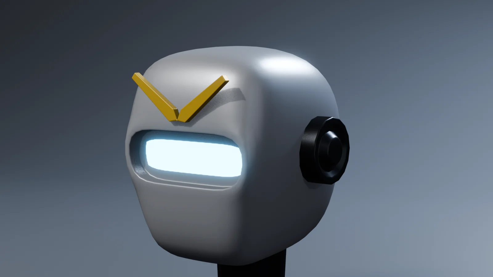
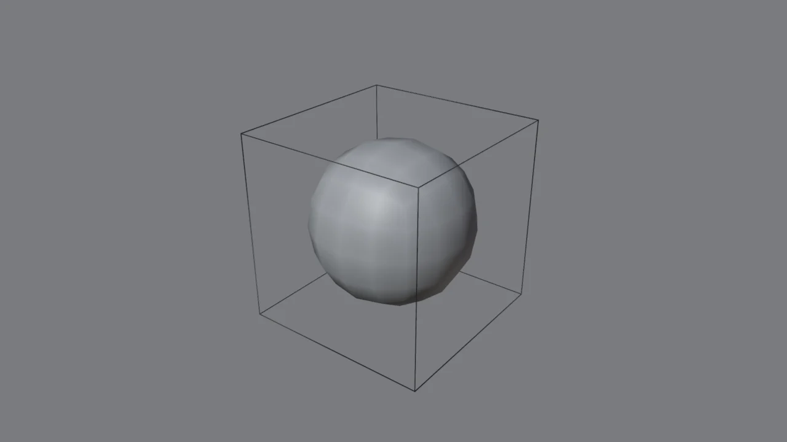
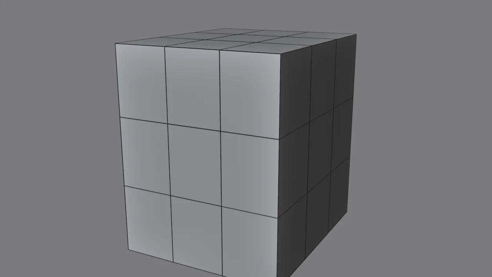
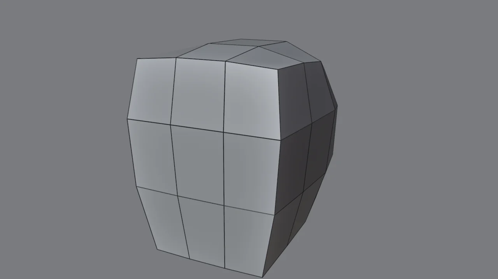
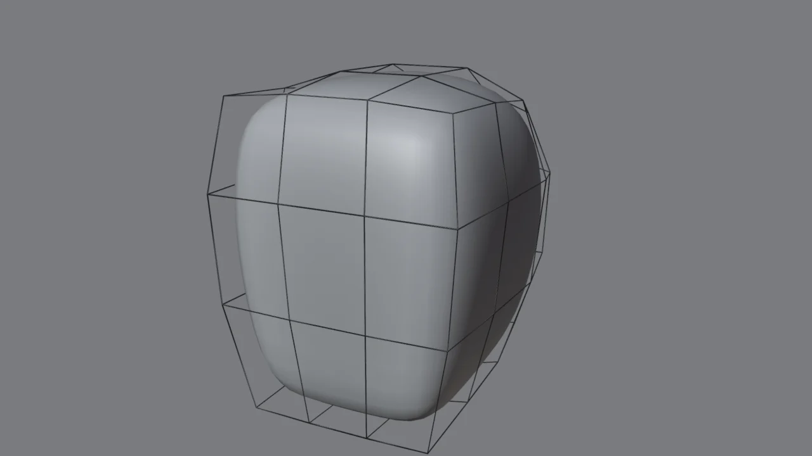
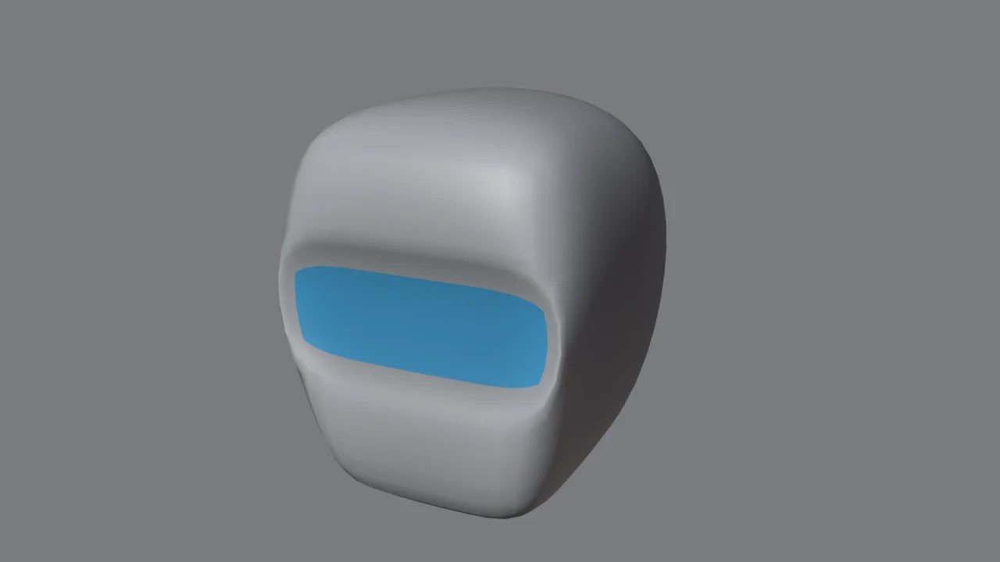
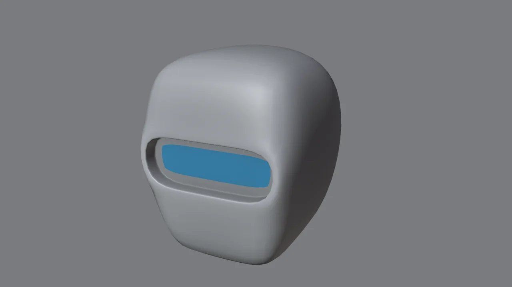
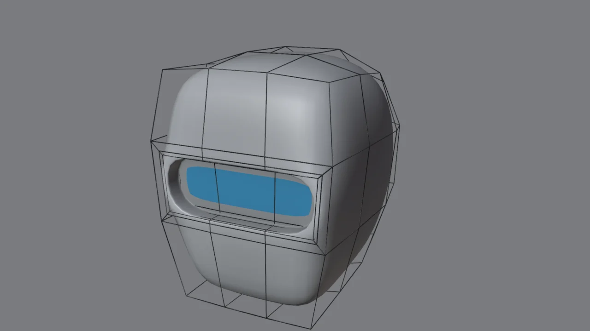
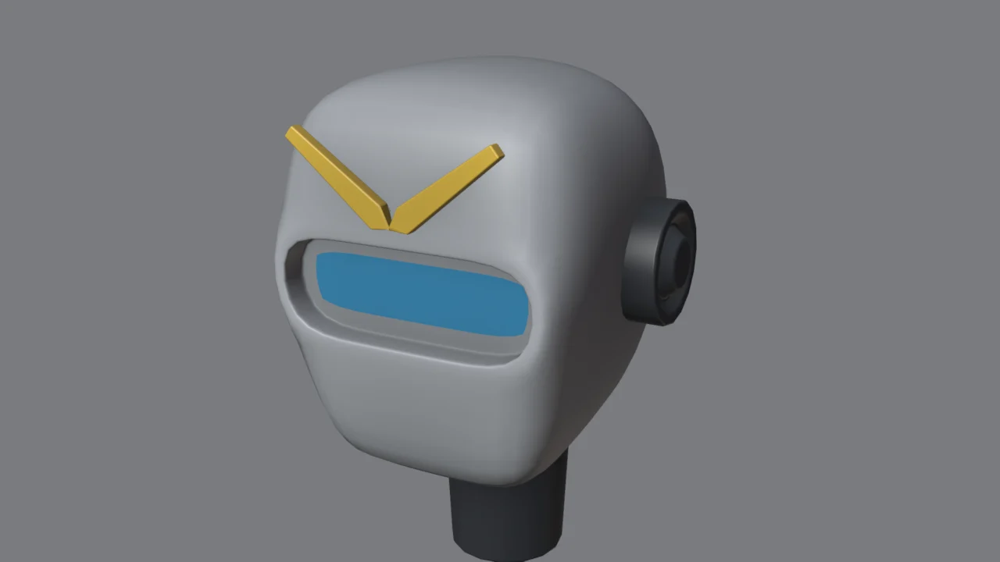

Lo que vas a forjar // objetivo

Es una cabeza sencilla a propósito: el objetivo es que entiendas cómo se controla una superficie subdividida. Con eso podrás hacer cualquier casco, hombrera o pieza curva del androide.
Subdivisión y la «jaula» // concepto
El modificador Subdivision Surface divide cada cara en cuatro y suaviza el resultado, una y otra vez. Tú no editas la superficie suave, sino una malla sencilla que la rodea: la jaula (cage). En las imágenes, la jaula son las líneas negras.

La regla de oro: la subdivisión redondea en proporción a la distancia entre aristas. Aristas separadas = curva amplia. Aristas juntas = borde nítido. Todo este módulo es aplicar esa idea.
Tres formas de afilar un borde // técnicas
Gira los tres cubos y compara sus bordes:
| Técnica | Cómo | Cuándo |
|---|---|---|
| Support loops | Ctrl+R y deslizar el corte cerca del borde, o un Inset pequeño alrededor de un hueco | La más usada y la más controlable. Es la que verás en todos los tutoriales. |
| Edge crease | Selecciona aristas → Shift+E y escribe un valor de 0 a 1 | Para probar rápido. Con 1 el borde queda totalmente afilado, lo que no es realista. |
| Bevel antes del Subdivision | Un modificador Bevel (2 segmentos, Angle) encima del Subdivision en la pila | Crea los apoyos por ti y deja la jaula limpia. Muy cómodo para piezas complejas. |
Gírala paso a paso // 3D
Las líneas son la jaula, que es lo que editas tú. La superficie gris es lo que genera la subdivisión. Fíjate en los pasos 4 y 5: la diferencia está en los apoyos alrededor del visor.
El bloque

- Cubo con Dimensions
0.8×0.95×1.0→ Ctrl+A Scale. - Tab, A, clic derecho → Subdivide. En el panel de abajo a la izquierda: Number of Cuts 2.
- Activa la simetría: en la cabecera del visor 3D, el icono de la mariposa → X. A partir de ahora, lo que muevas en un lado se refleja en el otro.
¿Por qué 3×3? Queremos una fila central de caras para el visor, y pocas aristas para controlar curvas amplias. Empieza siempre con la mínima malla posible: es mucho más fácil de moldear.
Dar forma de casco

- Con todo seleccionado: Shift+Alt+S (To Sphere) y escribe
0.5. El bloque se redondea a medio camino entre caja y esfera. - La cara debe quedar más plana: selecciona los vértices de la cara frontal (vista frontal Num 1, rayos X y selección de caja) y escálalos en Y: S Y
0.6. - Barbilla: selecciona la fila de vértices de abajo y estréchala con S X
0.75. - Ajusta a ojo con edición proporcional (O): al mover un vértice arrastra a los vecinos. Gira la Rueda durante el movimiento para cambiar el radio de influencia.
Tu experiencia orgánica cuenta: esta fase es como esculpir con muy pocos puntos. Busca una silueta que funcione desde el frente, de lado y desde arriba. Si la forma no funciona aquí, no la arreglará ningún detalle.
Activar la subdivisión

- En modo objeto, pulsa Ctrl+2: añade un Subdivision Surface de nivel 2 (con Ctrl+1 o Ctrl+3 eliges otros niveles).
- Clic derecho → Shade Smooth.
- En el modificador, deja Levels Viewport en 2 y Render en 2 o 3.
No subas los niveles para «arreglar» la forma. Más niveles solo añaden polígonos, no cambian la silueta. Si algo está blando, faltan apoyos en la jaula.
El visor… sin apoyos (para ver el problema)

- Modo edición, caras: selecciona las 3 caras centrales del frente.
- E
-0.07Enter: el visor se hunde.
Mira el resultado: el hueco parece de plastilina, con los bordes blandos y la cara entera deformada a su alrededor. La subdivisión redondea desde la arista del hueco hasta las aristas vecinas, que están lejos. Deshazlo con Ctrl+Z y vamos a hacerlo bien.
El visor con support loops

- Con las 3 caras del visor seleccionadas: I
0.035Enter (deja margen para el marco). - I
0.015Enter: primer apoyo, pegado al borde del hueco, en la superficie. - E
-0.012: segundo apoyo, justo debajo del borde, en la pared. - E
-0.046: la profundidad del hueco. - E
-0.012: tercer apoyo, al fondo de la pared. - I
0.015: cuarto apoyo, en el fondo. - Con el fondo seleccionado: pestaña Material → + (nuevo hueco) → New → Emission azul → Assign.

Patrón: cada borde nítido necesita una arista cerca a cada lado. Un borde de hueco tiene dos lados: la superficie y la pared. Por eso hay un apoyo en cada uno, y lo mismo en el fondo.
Piezas duras: orejeras, cresta en V y cuello

No hace falta que todo sea una sola malla subdividida. Las piezas mecánicas pequeñas se hacen aparte, con el flujo de bevel, y se apoyan como floaters (módulo 3):
- Orejeras: cilindros de 16 lados girados 90°, con Inset/Extrude en la tapa (como la celda del módulo 1) y Bevel con Harden Normals.
- Cresta en V: un plano en vista frontal; en modo edición dale forma de hoja con 4–5 vértices, E para darle grosor (0.03) y un modificador Mirror en X para la otra mitad. Color amarillo: el guiño Gundam.
- Cuello: un cilindro ligeramente cónico (Radius 1 y 2 distintos en el panel Add Cylinder).
Combinar flujos es lo que hacen los profesionales: subdivisión para las grandes superficies curvas, bevel y booleanos para la mecánica, y floaters para el detalle. Cada herramienta donde mejor funciona.
Reglas de topología para subdivisión // chuleta
| Regla | Por qué |
|---|---|
| Todo quads (caras de 4 lados) | La subdivisión está pensada para quads. Los triángulos y los n-gons crean pellizcos y bultos. Aquí, al contrario que en el módulo 2, los n-gons sí son un problema. |
| Polos lejos de las curvas visibles | Un polo es un vértice con 3 o con 5 o más aristas. Son inevitables, pero colócalos en zonas planas o poco visibles. |
| Mínima jaula posible | Menos vértices = curvas más limpias y más fáciles de controlar. Añade cortes solo donde necesites apoyos o detalle. |
| Booleanos, fuera | Un booleano sobre una malla subdividida genera n-gons y triángulos que se deforman. Haz los cortes con Inset/Extrude/Knife y apoyos, o pon los detalles como piezas aparte. |
| Escala aplicada | Igual que con el Bevel: Ctrl+A antes de los modificadores. |
Comprueba la malla: el Revisor de Forja detecta los n-gons y los triángulos en objetos con Subdivision y te avisa.
Reto: tu propia cabeza // checklist
Diseña la cabeza de tu androide. Algunas ideas del género mecha:
- Dos ojos en vez de visor: dos grupos de caras, cada uno con sus apoyos.
- Mono-ojo: una ranura horizontal muy larga, con un «ojo» emisivo que la recorre.
- Rejillas en la barbilla como floaters (con el Array del módulo 3).
- Antenas o una cresta distinta: aletas laterales, un cuerno central…